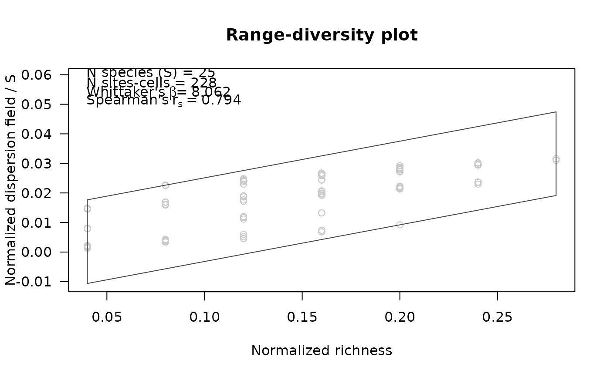

Graphic representations of results from
prepare_PAM_CS. Plots present the new range-diversity diagram
and geographic views of results. Geographic representations are only possible
when significant analyses were performed.
Usage
plot_PAM_CS(PAM_CS, add_significant = FALSE,
add_random_values = FALSE, col_all = "#CACACA",
col_significant_low = "#6D6D6D",
col_significant_high = "#000000",
col_random_values = "#D2D2D2", pch_all = 1,
pch_significant_low = 16, pch_significant_high = 16,
pch_random_values = 1, main = NULL,
xlab = NULL, ylab = NULL, xlim = NULL, ylim = NULL,
ylim_expansion = 0.25, las = 1, add_legend = TRUE)
plot_PAM_CS_geo(PAM_CS, xy_coordinates = NULL, col_all = "#CACACA",
col_significant_low = "#6D6D6D",
col_significant_high = "#000000", border = NULL,
pch_all = 16, pch_significant_low = 16,
pch_significant_high = 16, xlim = NULL,
ylim = NULL, mar = NULL)Arguments
- PAM_CS
object of class PAM_CS or a base_PAM object containing a PAM_CS object as part of PAM_indices. These objects can be obtained using the function
prepare_PAM_CS.- add_significant
(logical) whether to add statistically significant values using a different symbol. Default = FALSE. If TRUE and values indicating significance are not in
PAM_CS, a message will be printed.- add_random_values
(logical) whether to add values resulted from the randomization process done when preparing
PAM_CS. Default = FALSE. Valid only ifadd_significant= TRUE, and randomized values are present inPAM_CS.- col_all
color code or name for all values or those that are not statistically significant. Default = "#CACACA".
- col_significant_low
color code or name for significant values below confidence limits of random expectations. Default = "#000000".
- col_significant_high
color code or name for significant values above confidence limits of random expectations. Default = "#000000".
- col_random_values
color code or name for randomized values. Default = "D2D2D2".
- pch_all
point symbol to be used for all values. Defaults = 1 or 16.
- pch_significant_low
point symbol to be used for significant values below confidence limits of random expectations. Default = 16.
- pch_significant_high
point symbol to be used for significant values above confidence limits of random expectations. Default = 16.
- pch_random_values
point symbol to be used for randomized values. Default = 1.
- main
main title for the plot. Default = NULL.
- xlab
label for the x-axis. Default = NULL.
- ylab
label for the y-axis. Default = NULL.
- xlim
x limits of the plot (x1, x2). For
plot_PAM_CS, the default, NULL, uses the range of normalized richness.- ylim
y limits of the plot. For
plot_PAM_CS, the default, NULL, uses the range of the normalized values of the dispersion field. The second limit is increased by adding the result of multiplying it byylim_expansion, ifadd_legend= TRUE.- ylim_expansion
value used or expanding the
ylim. Default = 0.25.- las
the style of axis labels; default = 1. See
par.- add_legend
(logical) whether to add a legend describing information relevant for interpreting the diagram. Default = TRUE.
- xy_coordinates
Only required if
PAM_CSis of class PAM_CS. A matrix or data.frame containing the columns longitude and latitude (in that order) corresponding to the points inPAM_CS$S_significance_id. Default = NULL- border
color for cell borders of the PAM grid. The default, NULL, does not plot any border.
- mar
(numeric) vector of length 4 to set the margins of the plot in geography. The default, NULL, is (3.1, 3.1, 2.1, 2.1).
Value
For plot_PAM_CS:
A range-diversity plot with values of normalized richness in the x-axis, and normalized values of the dispersion field index divided by number of species in the y-axis.
For plot_PAM_CS_geo:
A geographic view of the PAM representing the areas or points identified as non statistically significant, significant above random expectations, and significant below random expectations.
Examples
# Data
b_pam <- read_PAM(system.file("extdata/b_pam.rds",
package = "biosurvey"))
# Preparing data for CS diagram
pcs <- prepare_PAM_CS(PAM = b_pam)
# Plot
plot_PAM_CS(pcs)
